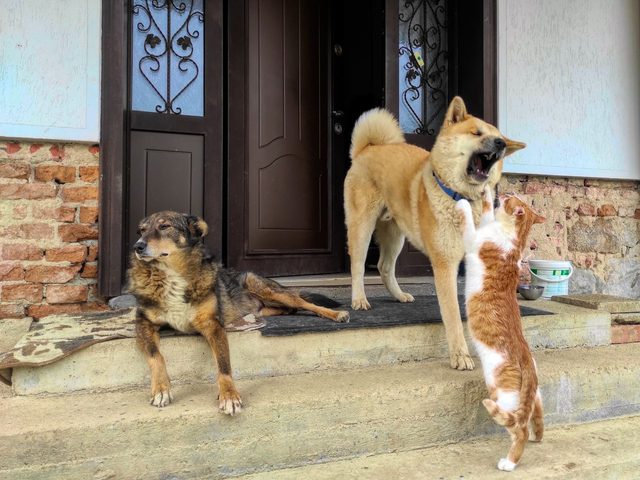
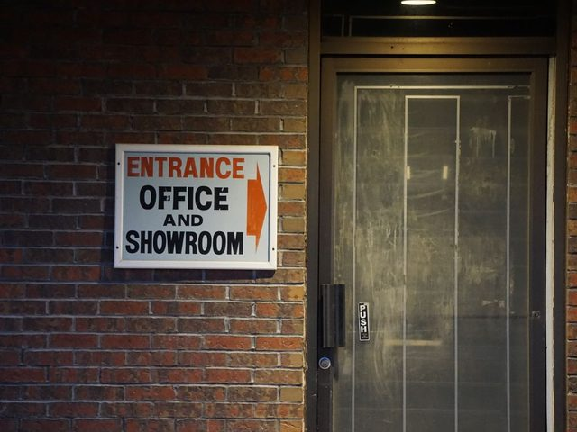

VOCABULARY · 主題 2000 字 PART 2 UNIT 34
Other nouns (2)．其他名詞（2）
其他名詞第二部分，debate 到 influence，共 40 個。很多名詞是動詞或形容詞變來的：decide → decision、honest → honesty、free → freedom。
共 40 個單字．點 🔊 聽發音

1debaten.
辯論；討論
debate team 辯論隊
Our class had a debate about school uniforms.我們班辯論學校制服的問題。
2decisionn.
決定
decide → decision；make a decision
It was a hard decision to make.這是個很難做的決定。
3departmentn.
部門；系
department store 百貨公司
She works in the sales department.她在業務部工作。
4desiren. / v.
渴望；欲望
He has a strong desire to become a doctor.他非常渴望成為醫生。
5differencen.
不同；差別
different → difference
Can you tell the difference between the twins?你分得出那對雙胞胎的不同嗎？
6difficultyn.
困難
複數 difficulties；have difficulty (in) V-ing
Grandpa has difficulty walking up the stairs.爺爺爬樓梯有困難。
7directionn.
方向；指示
in the direction of 朝…方向
Which direction is the train station?火車站在哪個方向？

8discussionn.
討論
discuss → discussion
We had a discussion about the class trip.我們討論了班級旅行的事。
9dutyn.
責任；義務
複數 duties；on duty 值班
It's my duty to feed the dog.餵狗是我的責任。
10edgen.
邊緣；邊
Don't stand too close to the edge of the cliff.不要站得離懸崖邊太近。

11educationn.
教育
不可數；educate 教育（動詞）
Education is important for every child.教育對每個孩子都很重要。
12effortn.
努力
make an effort 努力
She made a big effort to finish the project on time.她非常努力，準時完成了專題。

13emotionn.
情緒；情感
emotional 情緒化的
Music can show many different emotions.音樂可以表達很多不同的情緒。

14enemyn.
敵人
複數 enemies
The cat and the mouse are enemies in the cartoon.卡通裡貓和老鼠是敵人。

15energyn.
精力；能源
不可數；energetic 精力充沛的
Kids have so much energy!小孩的精力真充沛！
16enginen.
引擎；發動機
engineer 工程師
The car engine won't start.車子的引擎發不動。

17entrancen.
入口
↔ exit 出口
Meet me at the main entrance of the zoo.在動物園的大門入口跟我碰面。

18eventn.
事件；活動
The school sports day is a big event.學校運動會是一件大事。

19exitn.
出口
↔ entrance
Where is the emergency exit?緊急出口在哪裡？
20faultn.
錯誤；過失
It's my fault. 是我的錯
Don't blame him. It's not his fault.別怪他，那不是他的錯。

21fearn.
恐懼；害怕
a fear of… 害怕…
My sister has a fear of spiders.我妹妹很怕蜘蛛。

22feen.
費用
entrance fee 入場費；school fees 學費
The entrance fee is 100 dollars.入場費是一百元。
23feelingn.
感覺；感情
hurt one's feelings 傷某人的心
I have a feeling that it will rain.我覺得好像會下雨。
24flagn.
旗子
national flag 國旗
They raised the flag in the morning.他們早上升旗。

25flightn.
班機；飛行
fly → flight
Our flight to Tokyo leaves at 8 a.m.我們飛東京的班機早上八點起飛。
26freedomn.
自由
不可數；free → freedom
Birds have the freedom to fly anywhere.鳥有到處飛翔的自由。
27friendshipn.
友誼
不可數；friend + -ship
Our friendship started in first grade.我們的友誼從一年級開始。
28gesturen.
手勢；姿態
He made a gesture for me to come in.他做手勢要我進來。

29goaln.
目標；（足球）進球
score a goal 進球得分
My goal is to win the race.我的目標是贏得比賽。
30goodnessn.
善良；（驚嘆）天啊
My goodness! 我的天啊！
My goodness! Look at all this snow!天啊！看看這麼多雪！

31governmentn.
政府
govern 治理 + -ment
The government built a new park in our city.政府在我們城市蓋了一座新公園。
32gunn.
槍
Police officers carry guns.警察帶著槍。

33haircutn.
理髮；髮型
get a haircut 去剪頭髮
I need to get a haircut this weekend.我這週末要去剪頭髮。
34honestyn.
誠實
不可數；h 不發音
Honesty is the best policy.誠實為上策。
35humann. / adj.
人類；人的
human being 人類
Dogs can hear sounds that humans can't.狗聽得到人類聽不到的聲音。
36humorn.
幽默
不可數；sense of humor 幽默感
Our teacher has a great sense of humor.我們老師很有幽默感。

37hungern.
飢餓
不可數；hungry 餓的
Many people in the world still suffer from hunger.世界上仍有很多人在挨餓。
38importancen.
重要性
不可數；important → importance
Our teacher talked about the importance of sleep.老師談到睡眠的重要性。

39incomen.
收入
Mom's income helps pay for our house.媽媽的收入幫忙付房子的錢。
40influencen. / v.
影響
have an influence on… 對…有影響
My grandfather had a big influence on me.我爺爺對我影響很大。
FOCUS
從別的詞變來的名詞
| 原本 | 名詞 |
|---|---|
| decide 決定 | decision |
| discuss 討論 | discussion |
| different 不同的 | difference |
| honest 誠實的 | honesty |
| free 自由的 | freedom |
| important 重要的 | importance |
常見名詞字尾：-sion／-tion、-ence／-ance、-ty、-dom、-ship、-ment。